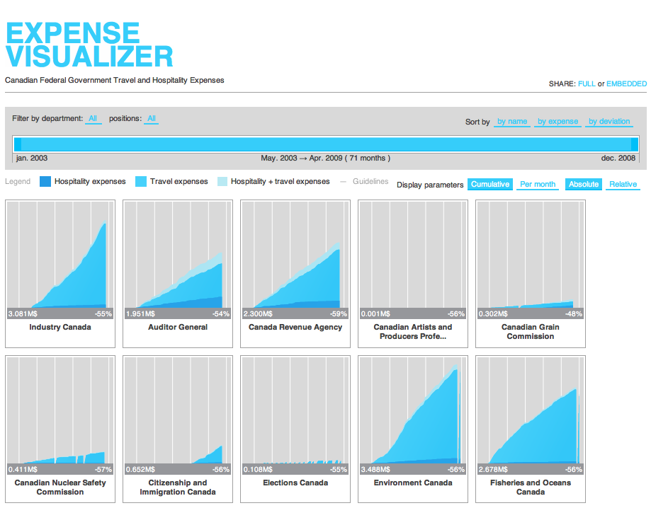

Open Data
"Information Technology and Public Administration" in Carleton University's School of Public Policy and Administration Edition™
Edward Ocampo-Gooding

Open Data Ottawa
Founded 2010
Hackfests!


Open Data Municipal Legislation!
“That Council […] adopt the principles of Open Government, as described in this report, and declare the City of Ottawa data to be ‘Open’ […]” – Spring, 2010
Open Data Day!
Swedish Dance Party Hackfests!
Open Data
WTF?
Open Data is...
Freely Accessible
And
Machine Readable
(and free to distribute/modify)
Mmmm...raw data

Mmmm...raw data on a map

Ottawatrash.ca

Stumble safely

Dog park finder
Fix my street

Don't Eat.at
Expense Visualizer
Proracunski Kalkulator (Croatia)

MBTA Visualizations


Sweet music
Sweet music
Where is this data?
Cities
National Governments

Intl' Organizations

In Space

You